← 返回路线库嘉兴 · iPhone 百度验证
在 Safari 点击。每条确认：自行车模式、起终点、途经点顺序、路线图、公里数。百度重新规划，不是轨迹导入。
此页是待测清单，打开 App 不等于通过。可用 Safari「在页面上查找」搜索英文简称（如 juanhu）定位。请记录全程/去程/返程/备用分别的结果，不点击“开始导航”。
湘家荡 · 环湖公共道路 xiangjiadang · 8.6km
备用与地图对照
起点：七星路泊位附近起点。闭合环线，不拆去返程。
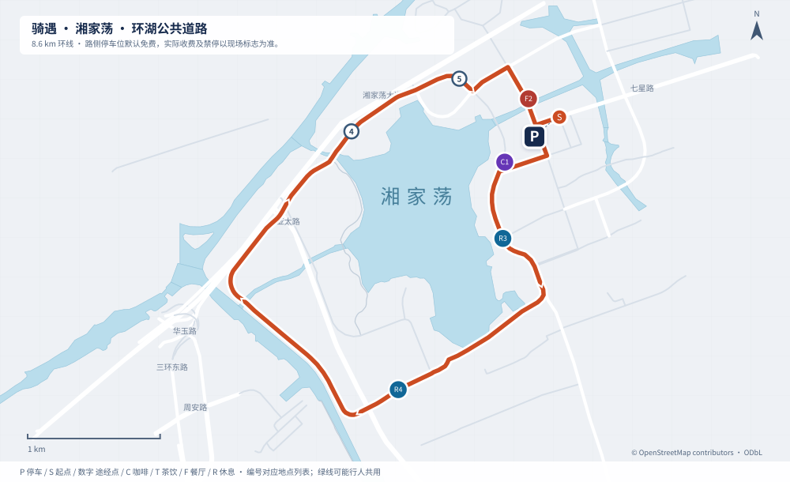
路线详情秀湖 · 外围街道一圈 xiuhu · 7.2km
备用与地图对照
起点：秀洲大道泊位附近起点。闭合环线，不拆去返程。
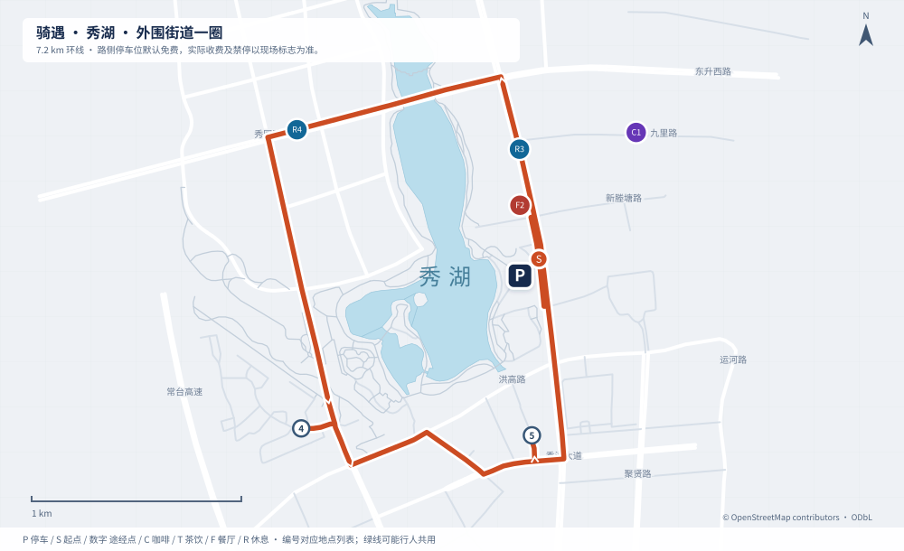
路线详情王江泾 · 莲泗荡乡路往返 wangjiangjing · 7.8km
备用与地图对照
起点：万福路泊位附近起点。折返点：莲泗荡西侧道路折返点。
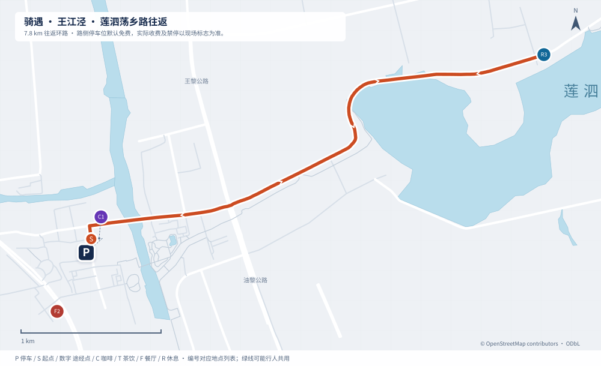
路线详情新塍塘 · 塘南乡路往返 xincheng · 9.3km
备用与地图对照
起点：观音桥路泊位附近起点。折返点：新塍东南公共道路折返点。
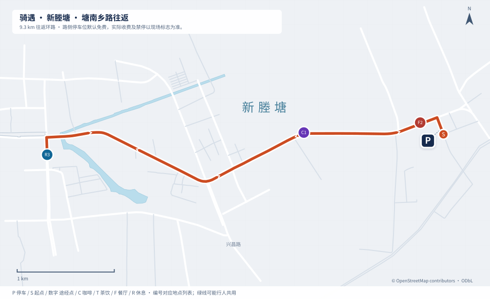
路线详情乌镇 · 南部乡路与镇区环线 wuzhen · 13.5km
备用与地图对照
起点：甘泉西路泊位附近起点。闭合环线，不拆去返程。
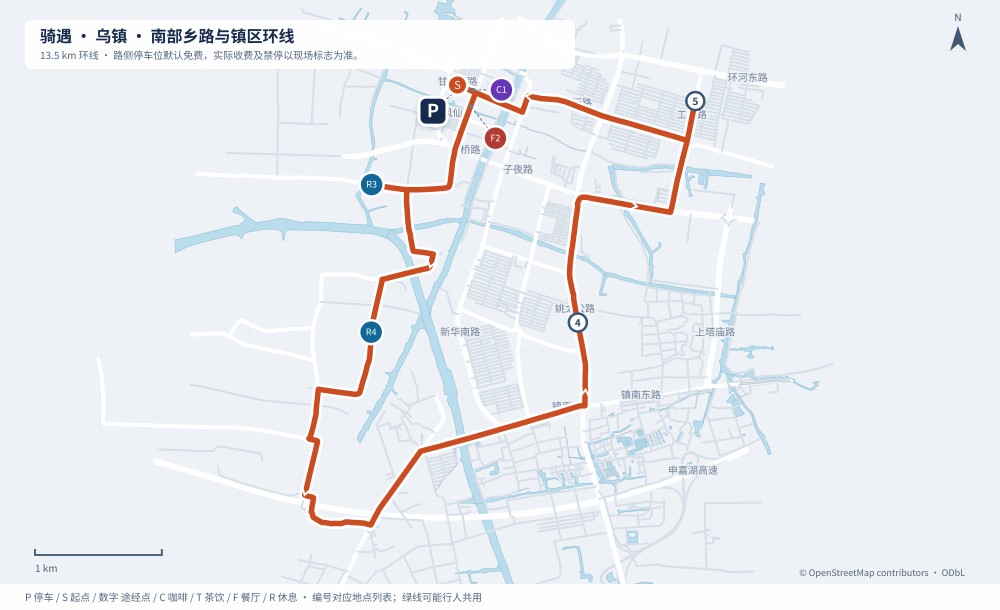
路线详情凤凰湖 · 辅路与凤仪路环线 fenghuanghu · 6.5km
备用与地图对照
起点：诚园路泊位附近起点。闭合环线，不拆去返程。
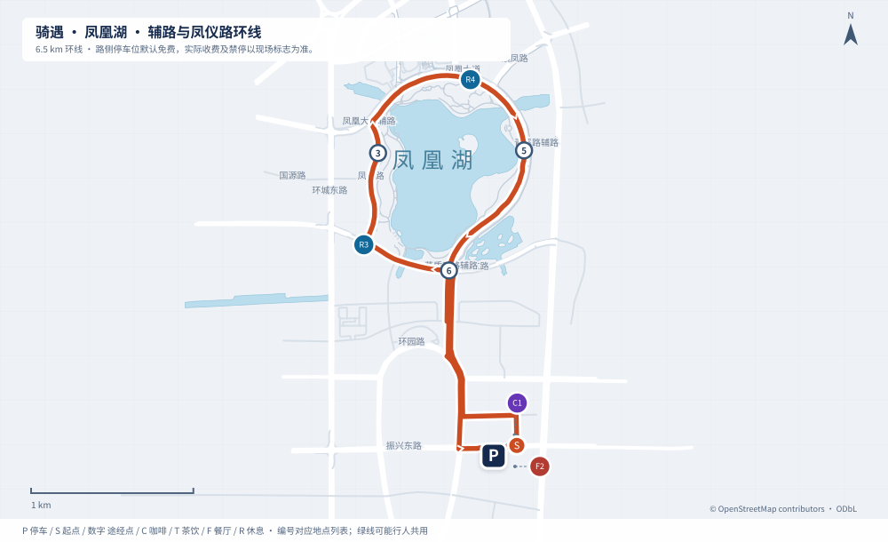
路线详情鹃湖 · 南岸慢行道往返 juanhu · 6.4km
备用与地图对照
起点：竞芳路泊位附近起点。折返点：南岸东端慢行道折返点。
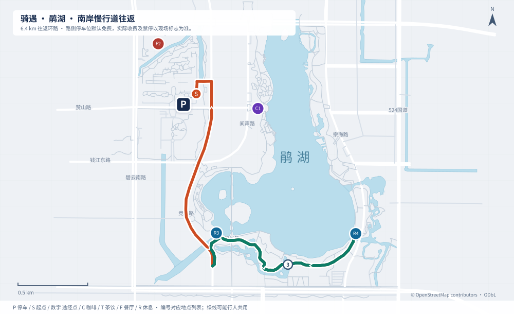
路线详情大云 · 镇区与田园道路环线 dayun · 6.5km
备用与地图对照
起点：云溪路泊位附近起点。闭合环线，不拆去返程。
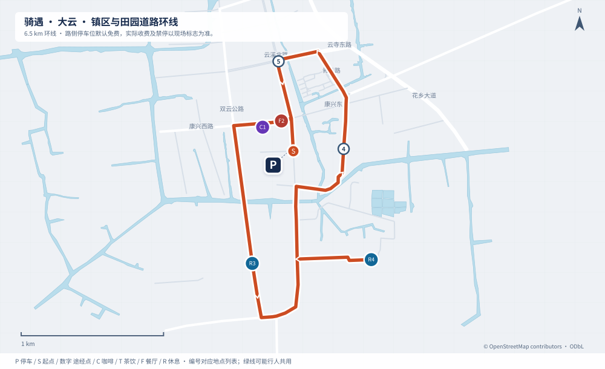
路线详情西塘 · 外围公共街道环线 xitang · 12.4km
备用与地图对照
起点：祥符路泊位附近起点。闭合环线，不拆去返程。
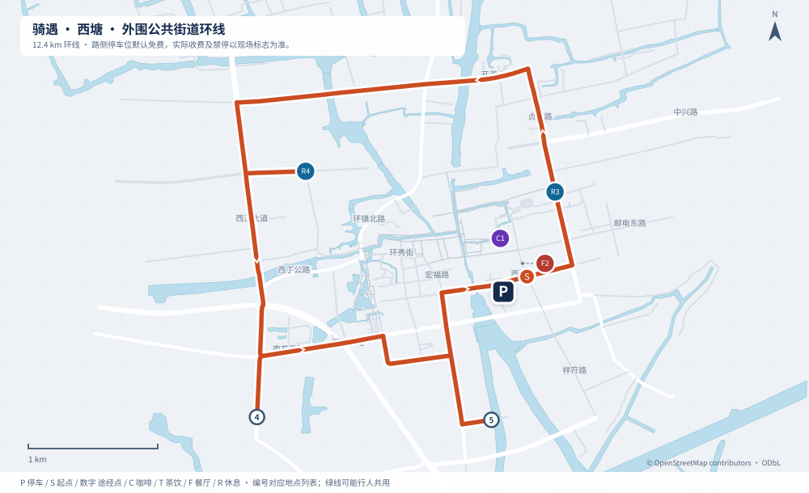
路线详情南北湖 · 环湖道路与澉浦接驳 nanbeihu · 11.0km
备用与地图对照
起点：南浦路泊位附近起点。闭合环线，不拆去返程。
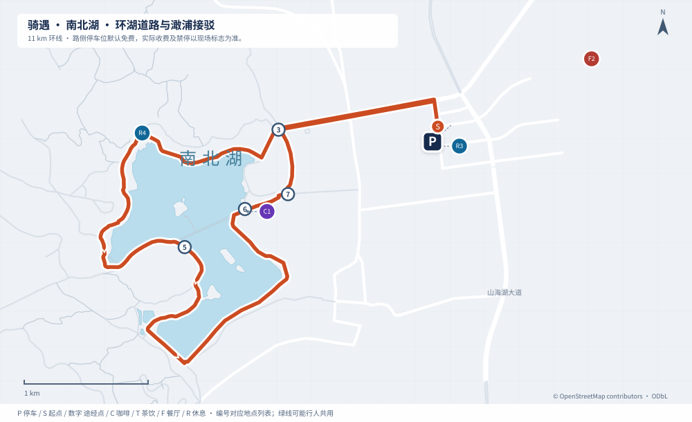
路线详情海盐 · 观海园至滨海街道往返 haiyan-coast · 8.5km
备用与地图对照
起点：滨海大道泊位附近起点。折返点：滨海街道北端折返点。
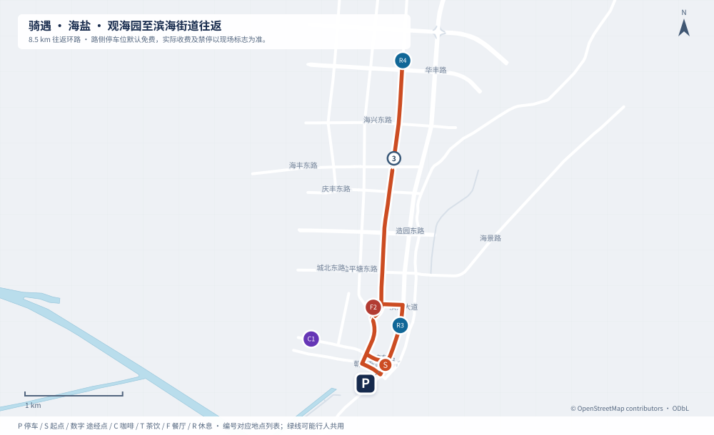
路线详情平湖 · 东湖外围街道环线 pinghu-donghu · 7.4km
备用与地图对照
起点：东湖大道泊位附近起点。闭合环线，不拆去返程。
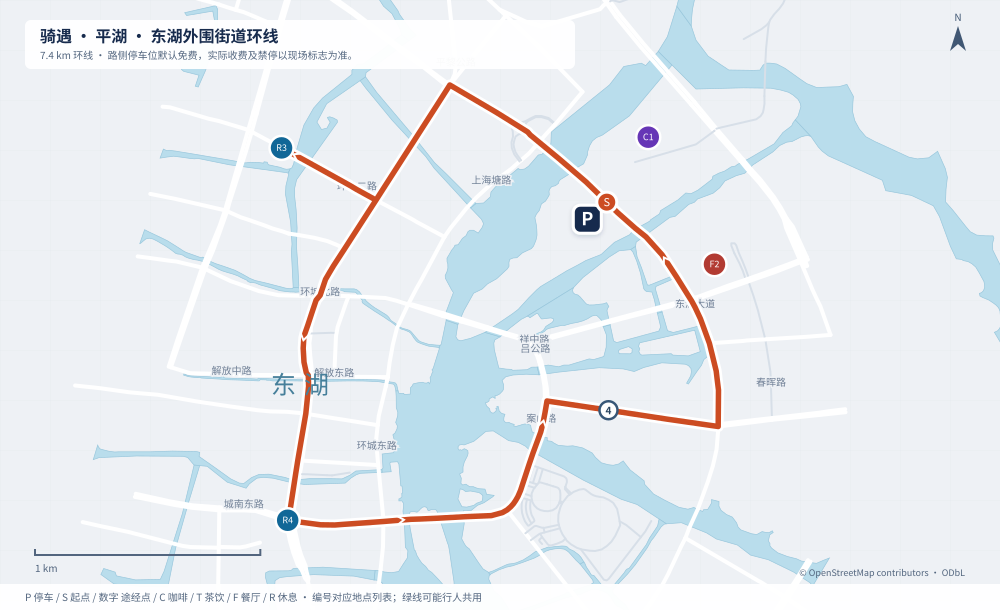
路线详情乍浦 · 天妃路与海岸道路往返 zhapu · 10.4km
备用与地图对照
起点：雅山中路泊位附近起点。折返点：南湾路方向折返点。
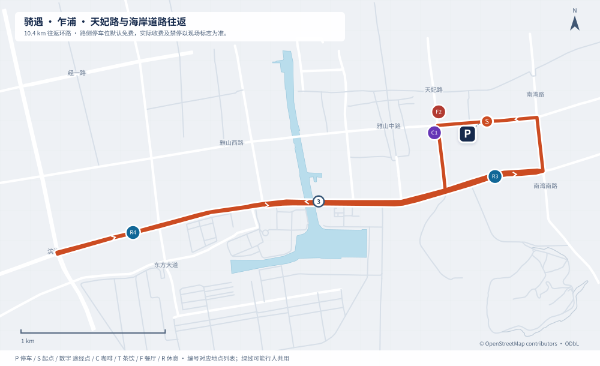
路线详情地图数据 © OpenStreetMap contributors · ODbL。当前路段通行与收费以现场为准。